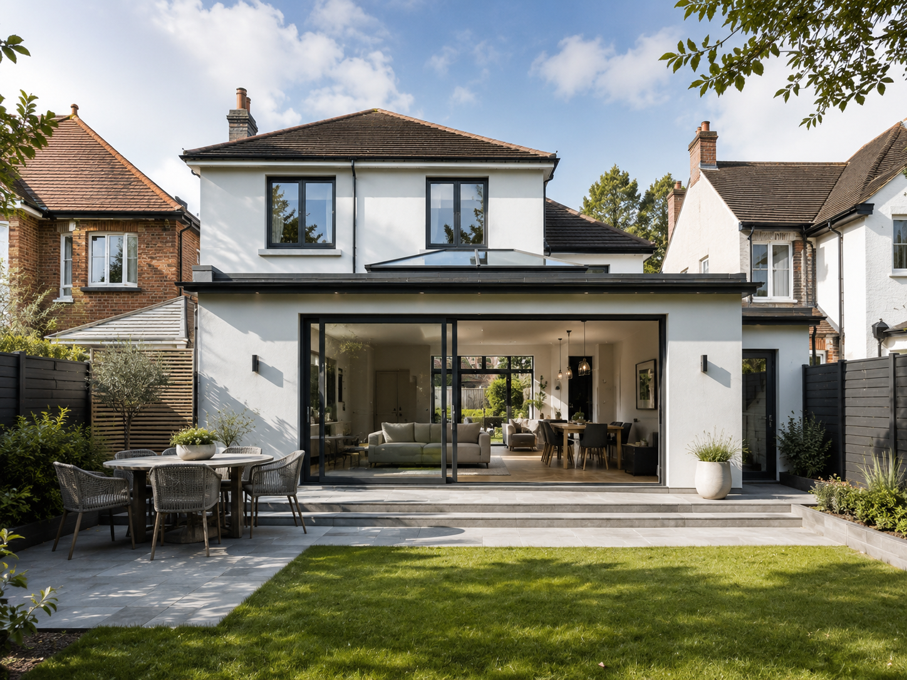

Single Storey Extensions in Colchester
Essex Builders create single storey extensions in Colchester for homeowners who need more space, a better ground-floor layout, a larger kitchen, or a brighter open-plan living area built properly from the start.

From rear extensions to kitchen-diner extensions, we help Colchester homeowners create practical living space with reliable building work and a high-quality finish.
A practical way to add valuable living space to your Colchester home
A well-planned single storey extension can completely change how a home works. It can create a larger kitchen, a dining area that connects to the garden, an extra family room, a utility space, or a more open layout that makes the ground floor feel brighter and easier to use.
Essex Builders provide single storey extensions in Colchester and surrounding areas, with a focus on clear communication, tidy workmanship and building work that is planned around the property, access, structure, drainage and final finish.
- Single storey rear extensions for larger living areas and garden-facing rooms
- Kitchen extensions and kitchen-diner extensions for open-plan family spaces
- Side extensions and layout improvements to make better use of unused space
- Brickwork, foundations, roofing, structural openings, plastering and preparation
- Free written quotes for homeowners in Colchester and nearby Essex areas
Extension building services for homeowners who want more usable space
This page is focused on specific Colchester extension searches, including single storey extensions, rear extensions, kitchen extensions and open-plan living projects.
Rear Extensions
Extend out from the back of your home to create a larger kitchen, dining room, family room or open-plan living space with better garden access.
Side Extensions
Make better use of side-return or unused external space with a practical single storey extension designed around the property layout.
Kitchen Extensions
Create the larger kitchen-diner many Colchester homeowners want, with space for cooking, dining, entertaining and everyday family life.
Open-Plan Living
Combine extension work with internal layout changes to create brighter, more connected ground-floor spaces.
Foundations & Structure
Building work can include foundations, drainage considerations, brickwork, structural openings, steelwork and roof construction.
Finishing Preparation
We can prepare the new space for plastering, flooring, kitchens, decorating and the final finish that turns an extension into a usable room.
More room, better light and a stronger connection to the garden
Single storey extensions are popular because they solve real problems: cramped kitchens, awkward dining rooms, limited downstairs space and homes that no longer suit the way the family lives.
Room to Live Properly
A single storey extension can add the everyday space that is often missing from older Colchester homes.

Kitchen, Dining & Living
Many extension projects combine building work with layout changes to create one practical open-plan family area.

Built for Daily Use
The goal is not just a bigger footprint. It is a well-finished space that improves how the whole home feels.
A clear route from first idea to finished single storey extension
Every extension is different, but a strong process helps keep the project organised, realistic and easier for the homeowner to understand.
Initial Discussion
We talk through the space you want to create, how the room will be used, access, finish expectations and the best next step.
Site Visit
The property, garden access, existing layout, drainage, ground levels and possible structural requirements are considered before quoting.
Quote & Scope
You receive a clear written quote so you understand the building work involved and what is included before the project starts.
Preparation
The work area is prepared, materials are planned and the project is organised around the agreed scope, access and building requirements.
Build Stage
Foundations, walls, roof structure, openings, insulation and core building work are completed with tidy, professional workmanship.
Making Good
The new space is prepared for plastering, flooring, kitchens, decorating and final use, depending on the agreed specification.
Built around the property, not just the idea on paper
Before a single storey extension can become a finished room, the practical details matter. Foundations, drainage, roof type, insulation, glazing, electrics, plumbing, structural openings and building control requirements can all affect the work.
Essex Builders help homeowners understand what is involved from a building point of view, so the project is not treated as just a simple box added to the back of the house. A good extension should feel like part of the home, not an afterthought.
- Permitted development and planning considerations can depend on the property and design
- Building regulations commonly apply to extensions, structure, insulation and services
- Drainage, access, foundations and ground conditions can affect scope and cost
- Open-plan kitchen extensions may also need structural alterations or steelwork
Popular single storey extension searches we support
Homeowners often search in different ways depending on the project they have in mind. This page is built to capture those high-intent searches while still giving clear, useful information.
What affects the cost of a single storey extension?
No two extension quotes are the same. A simple rear extension and a large open-plan kitchen extension can involve very different work.
Free written quotes for extension projects in Colchester
The quickest way to get accurate guidance is to arrange a conversation about the property and the space you want to create. Essex Builders can look at the project, discuss likely considerations and provide a clear written quote for the building work.
For a faster response, send the property location, a brief description of the extension, any drawings or plans you already have, and photos of the area where the extension would be built.
Useful pages for homeowners planning a single storey extension
Many extension projects overlap with kitchens, structural alterations and wider renovation work, so these pages help users find the most relevant next step.
Single storey extensions in Colchester and nearby areas
Essex Builders are based in Colchester and cover surrounding areas for single storey extensions, rear extensions, kitchen extensions and related building work.
Single-storey extension guides
Review the main planning-permission considerations, learn what shapes a single-storey extension budget, and see how an extension progresses from design to completion.
Questions homeowners ask before building a single storey extension
These FAQs support useful searches around planning, building regulations, costs and the practical stages of extension work in Colchester.
Do you build single storey extensions in Colchester?
Yes. Essex Builders build single storey extensions in Colchester, including rear extensions, side extensions, kitchen extensions and open-plan extension projects for homeowners who need more usable living space.
What types of single storey extensions do you offer?
We can help with rear extensions, side extensions, kitchen-diner extensions, utility extensions, family room extensions and single storey extensions that form part of a wider home renovation.
Do I need planning permission for a single storey extension?
Some single storey extensions may fall under permitted development, while others need planning permission. This depends on the size, position, property type, previous extensions and any local restrictions. It is always worth checking before work starts.
Will my single storey extension need building regulations approval?
Most single storey extensions need building regulations approval. This usually covers foundations, drainage, structure, roof construction, insulation, ventilation, electrics, fire safety and glazing.
Can you build a kitchen extension in Colchester?
Yes. Kitchen extensions are one of the most popular single storey extension projects. Essex Builders can help with the building work, structural openings, plastering and preparation needed for a larger kitchen-dining space.
Can a single storey extension create an open-plan layout?
Yes. Many single storey extensions include structural alterations to connect the existing home with the new space, creating open-plan kitchen, dining and living areas.
How much does a single storey extension cost in Colchester?
Cost depends on the size, design, ground conditions, foundations, drainage, access, roof type, glazing, structural work, electrics, plumbing, insulation, materials and finish level. A site visit and written quote is the best way to price the work properly.
Can you help if I already have drawings or plans?
Yes. If you already have drawings, plans or structural information, Essex Builders can review the project details and provide a quote for the building work involved.
Planning a single storey extension in Colchester?
Contact Essex Builders to discuss your rear extension, side extension, kitchen extension or open-plan living project. We can talk through the space you want to create and provide a clear quote for the building work.